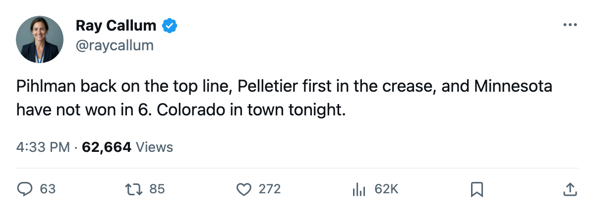

MIN
MIN COL
COLMinnesota Have Not Won in 6, and the Calder Winner Is Back on the Top Line
The Wild carry 6 points from 9 games into tonight's home game against Colorado, with Tuomo Pihlman back on the first line and the crease turned over.
 Ray CallumSenior correspondent · Home Ice Network
Ray CallumSenior correspondent · Home Ice Network
The piece
Minnesota have not won in 6 games and host Colorado tonight, with Tuomo Pihlman78 back on the top line and a new man listed first in the crease.
The Wild carry 6 points from 9 games. They have scored 23 goals and conceded 28, and their home column reads 1-4.
The Calder winner returns
Tuomo Pihlman won the Calder Trophy last season as the league's top rookie. He did not dress in the early going. Now he goes straight onto the first line and the first power-play unit, the left side of both.
The Wild have shuffled their lines and their defense pairs all month. Pihlman's return is the one that adds.
A crease turned over
 Manny Fernandez92 started 6 of Minnesota's 9 games, a 67% share of the work. He is out of the rotation.
Manny Fernandez92 started 6 of Minnesota's 9 games, a 67% share of the work. He is out of the rotation.  Jean-Marc Pelletier79, who has 3 games and a 33% share, is listed first, and Johan Holmqvist72 has been added as the second man.
Jean-Marc Pelletier79, who has 3 games and a 33% share, is listed first, and Johan Holmqvist72 has been added as the second man.
Two Wild forwards are on the injured list.  Wes Walz84 is out with an ankle injury, return targeted for 2005-11-04.
Wes Walz84 is out with an ankle injury, return targeted for 2005-11-04.  Bill Muckalt75 is out with a hand injury until 2005-11-19. Walz had been on the second penalty-kill unit before he went out.
Bill Muckalt75 is out with a hand injury until 2005-11-19. Walz had been on the second penalty-kill unit before he went out.
| Minnesota at 9 games | |
|---|---|
| points | 6 |
| goals for | 23 |
| goals against | 28 |
| at home | 1-4 |
| away | 1-3 |
Colorado won the first meeting of the season 4-3 on 2005-10-27, and they hold 10 points from 8 games.
